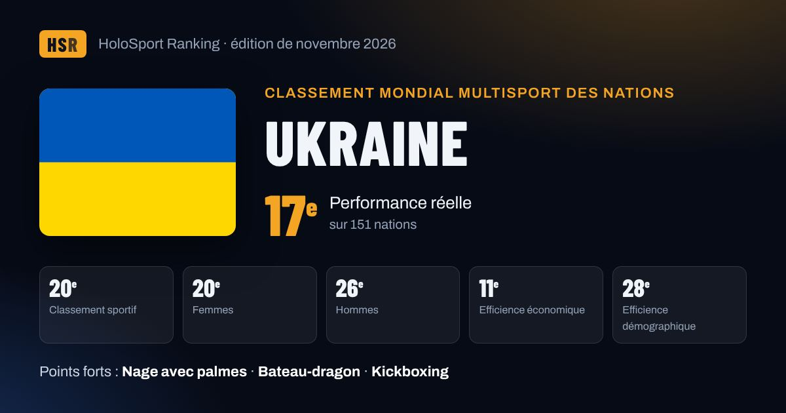

Ukraine au classement mondial multisport
Ukraine est 17e nation mondiale de la performance réelle HSR (novembre 2026) et 20e du classement sportif, tous sports confondus. Points forts : Nage avec palmes, Bateau-dragon, Kickboxing.

17ePerformance réelle
20eClassement sportif
20eFemmes
26eHommes
11eEfficience économique
28eEfficience démographique
Ses meilleurs sports
Points obtenus sur les 1000 de chaque fédération, et apport au score après pondération par le poids du sport. Score total : 1 193 points dans 25 sports.
| Sport | Points / 1000 | Apport au score |
|---|---|---|
| Nage avec palmes CMAS | 207,3 | 168,6 |
| Bateau-dragon IDBF | 239,8 | 118,4 |
| Kickboxing WAKO | 114,0 | 91,8 |
| Tennis ITF | 41,3 | 91,7 |
| Force athlétique IPF | 199,6 | 91,0 |
| Échecs FIDE | 29,1 | 65,7 |
| Escrime FIE | 63,0 | 65,6 |
| Muay-thaï IFMA | 73,1 | 63,0 |